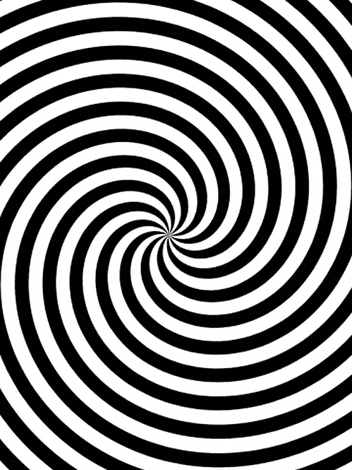

There is a fifth dimension beyond that which is known to man. It is a dimension as vast as space and as timeless as infinity. It is the middle ground between light and shadow, between science and superstition, and it lies between the pit of man's fears and the summit of his knowledge. This is the dimension of imagination. It is an area which we call "The Twilight Zone"!
فيه بُعد خامس أكبر من اللي الإنسان يعرفه. البُعد ده واسع زي الفضاء ومالوش نهاية زي الزمن. هو المنطقة اللي بين النور والظل، بين العلم والخرافة، وبيكون بين قاع مخاوف الإنسان وقمة معرفته. ده هو بُعد الخيال. المنطقة دي بنسميها
المنطقة الغامضة
You're traveling through another dimension, a dimension not only of sight and sound but of mind. A journey into a wondrous land whose boundaries are that of imagination. That's the signpost up ahead - your next stop, The Twilight Zone! You unlock this door with the key of imagination. Beyond it is another dimension - a dimension of sound, a dimension of sight, a dimension of mind. You're moving into a land of both shadow and substance, of things and ideas. You've just crossed over into the Twilight Zone!
إنت بتسافر في بُعد تاني، بُعد مش بس للبصر والصوت لكن كمان للعقل. رحلة لأرض رائعة حدودها هي حدود الخيال. العلامة اللي قدامك بتقول - محطتك الجاية، المنطقة الغامضة
إنت بتفتح الباب ده بمفتاح الخيال. ورا الباب فيه بُعد تاني - بُعد الصوت، بُعد الرؤية، بُعد العقل. إنت بتتحرك لأرض تحتوي على الظل والجوهر، على الأشياء والأفكار. انت لسه معدي ودخلت في المنطقة الغامضة

Welcome to "The Twilight Zone," a website dedicated to one of the most iconic and groundbreaking series in television history. If you're a fan of suspense, mystery, and thought-provoking storytelling, then you've arrived at the perfect destination. Our website is your ultimate guide to the fascinating world of "The Twilight Zone," a series that has captivated audiences with its imaginative plots, unforgettable characters, and profound social commentaries. Here, we dive deep into each episode, providing passionate and insightful reviews that celebrate the genius of Rod Serling and the incredible team behind this timeless masterpiece. From the eerie and unsettling to the heartwarming and inspirational, "The Twilight Zone" explores the full spectrum of the human experience, challenging viewers to think beyond the ordinary and question the boundaries of reality. Our reviews not only dissect the intricate details of each episode but also highlight the enduring impact and relevance of the series in today's world. Whether you're a longtime fan or a newcomer eager to explore this classic series, "The Twilight Zone" website offers a treasure trove of information, analysis, and appreciation. Join us as we journey through another dimension—a dimension not only of sight and sound but of mind. Step into "The Twilight Zone" and rediscover why this series remains one of the greatest of all time. 🌌📺✨
أهلًا وسهلًا بيك في "المنطقة الغامضة"، موقع مخصص لمراجعات واحدة من أعظم المسلسلات في تاريخ التلفزيون. إذا كنت من محبي التشويق، الغموض، والقصص التي تحفز التفكير، يبقى انت وصلت للمكان المناسب. الموقع بتاعنا هو دليلك المثالي لعالم "المنطقة الغامضة" الساحر، المسلسل اللي أسر قلوب الجماهير بحبكته الخيالية وشخصياته التي لا تُنسى وتعليقاته الاجتماعية العميقة. هنا، بنغوص بعمق في كل حلقة، بنقدم مراجعات شغوفة وعميقة بتحتفل بعبقرية رود سيرلينغ والفريق الرائع اللي وراه هذا العمل الخالد. من اللحظات المرعبة والمزعجة للقلوب، للقصص الدافئة والمُلهِمة، "المنطقة الغامضة" بيستعرض كامل الطيف البشري، وبيحفز المشاهدين على التفكير خارج حدود المعتاد واستجواب حدود الواقع. المراجعات بتاعتنا مش بس بتشرح التفاصيل الدقيقة لكل حلقة، لكنها كمان بتوضح التأثير الدائم والملحوظ للمسلسل في عالمنا النهاردة. سواء كنت من محبي المسلسل من زمان أو لسه جديد عليه وعايز تكتشف السلسلة الكلاسيكية دي، موقع "المنطقة الغامضة" بيقدم لك كنز من المعلومات والتحليلات والتقدير. انضم لينا وإحنا بنسافر لعالم تاني - عالم مش بس عن البصر والصوت لكن عن العقل كمان. ادخل لعالم "المنطقة الغامضة" واكتشف ليه المسلسل ده لسه من أعظم الأعمال في كل الأوقات. 🌌📺✨
This is how you reach out to the messenger of the written word: longlivepharahthefourteen@gmail.com.